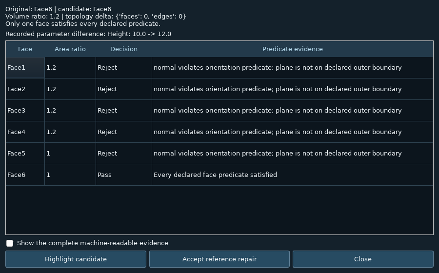
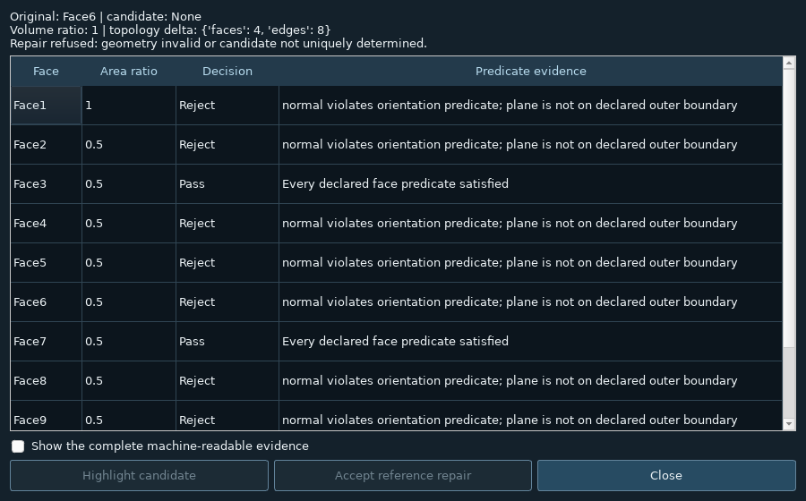

TopoIntent for FreeCAD · A FreeCAD workbench for reviewing links to model surfaces
Keep a feature attached to the surface you actually meant.
A sketch or another feature may depend on a particular surface of a CAD model. TopoIntent saves a simple description of that surface, checks it after a model change, and offers a replacement only when one surface clearly matches.
Get the FreeCAD workbenchSee the workflowExperimental release · Plugin or extension for the original app
What to expect from this release
- What you get
- An additional workbench installed inside FreeCAD. Its face checks and repair controls use FreeCAD's existing modeling and undo facilities.
- Verified so far
- The geometry checks, unique-match repair, refusal of ambiguous matches, native controls and undo were exercised with synthetic models in FreeCAD.
- Still needs testing or implementation
- The complete 3D viewport workflow and broader real-model compatibility still need testing.
- Relationship to the original app
- The release handles a narrow class of flat, axis-aligned outer faces and supported links. It complements FreeCAD's existing reference handling; it is not a general repair for every broken model.
Why you might use it
Suppose you attach a feature to the top of a box and later change the box. The label 'Face6' is a face number, not a description of 'the top surface'. You want a way to check that the link still means what you intended, even if the model successfully rebuilds.
A concrete example. Describe the target as the outside, horizontal surface at the top of the solid. After increasing the box's height, the analyzer explains which faces fail those checks and which one passes. If the top has been split into two equally plausible faces, it asks for a clearer choice instead of repairing the link automatically.
1. Describe the intended face
Select a supported flat outer surface and save the geometric checks that identify it.
2. Change the source model
Adjust the model and inspect the list of possible replacement surfaces, with a reason for each match or rejection.
3. Accept a clear match
Preview and accept a unique match. The workbench checks it again before changing the supported link and uses FreeCAD's undo system.
What this page shows. The diagram below is a browser explanation, not FreeCAD running in a web page. The later screenshots show the actual FreeCAD analyzer tested with made-up models.
Where it runs and what is still untested. This is an additional review tool for a narrow class of flat, axis-aligned outer faces, not a replacement for FreeCAD's own reference handling. Geometry calculations and native controls were tested; 3D viewport rendering was not verified.
├─ SourceSolid
│ Height: 12 mm
Captured intent:
normal +Z
outer maximum Z
area 0.25–4×
volume 0.5–2×
One candidate
A unique candidate may be previewed. The real workbench revalidates before commit.
Face6 still exists.
It may mean the wrong face.
A source edit can leave a consumer attached to an existing but unintended boundary. A clean recompute alone cannot tell you whether the design intent survived.
A contract, a candidate,
and a reason to refuse.
The reference clears its output when intent fails. The analyzer shows which predicates each face violates. Ambiguous matches remain unresolved until the designer supplies stronger intent.
Inside the original application
- Capture. Select an axis-aligned outer planar face of one valid solid. Review area and volume ratio intervals.
- Edit and diagnose. The model-tree reference stores the original geometry contract. Compare source parameters and per-face rejection reasons.
- Probe a counterfactual. For Part::Box, change one dimension in an isolated transient document and inspect the consequences. The working source remains unchanged.
- Accept a unique repair. Highlight the candidate, then explicitly rebind the reference. A stale preview or failed consumer recompute aborts the operation.
The GUI repairs its own Support binding. The adapter API also supports a native consumer's single LinkSub property of the same source. It refuses list/multi-face/cross-document rebinding.
Evidence you can inspect inside the app.
The real Qt analyzer shows the recorded dimension change and a predicate table. These captures came from the native offscreen GUI smoke test.

Inspect the ambiguous coplanar split and disabled repair

Offscreen Qt could not create an OpenGL context here. These tests verify native widgets, document transactions and kernel geometry, not viewport rendering.
Real geometry must pass.
The release is gated by actual FreeCAD/OpenCASCADE tests: box counterfactual, BRep face renumbering, Boolean coplanar split refusal, stale preview rejection, consumer rollback, and FCStd save/open.
Loading the published host report…
Separately, 14 dependency-free policy tests cover ambiguity, non-finite geometry, invalid/multiple solids, stale previews, degenerate bounds, and unsupported surfaces. Unit fixtures do not prove native integration. The build refuses to package this verified release without a passing host report.
What this adds to the existing ecosystem
| Existing capability | Remaining bounded contribution |
|---|---|
| Native dependency graph | Face-level predicates with explicit per-candidate rejection reasons. |
| Nxt's experimental feature-history and repair UI | A uniqueness gate and isolated dimension probe, not another whole modeling UI. |
| Topological Naming V2 proposal | An application-level contract above naming. No new naming algorithm or guaranteed roadmap claim. |
| Native undo | A repair validates fresh geometry before creating an ordinary reversible document step. |
A deliberately narrow contract
Supported: one valid solid and axis-aligned outer planar faces. General curved/internal-face matching, arbitrary constraint repair, rotated-model semantics and general-history cloning are outside this release.
Kernel validity and numerical limits are necessary checks; they do not prove complete human design intent. This workbench reports what its predicates justify and refuses ambiguous matches.